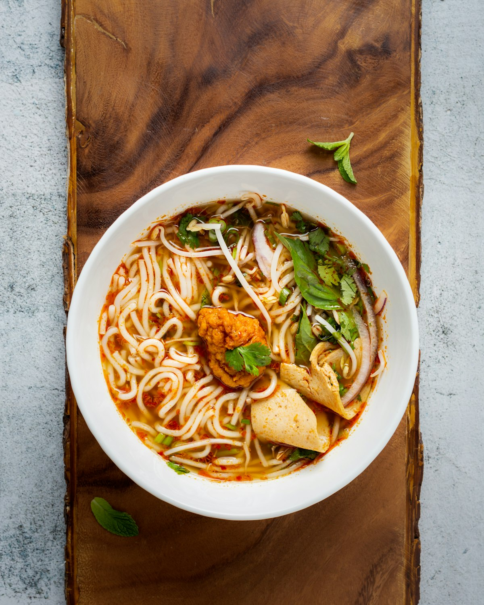
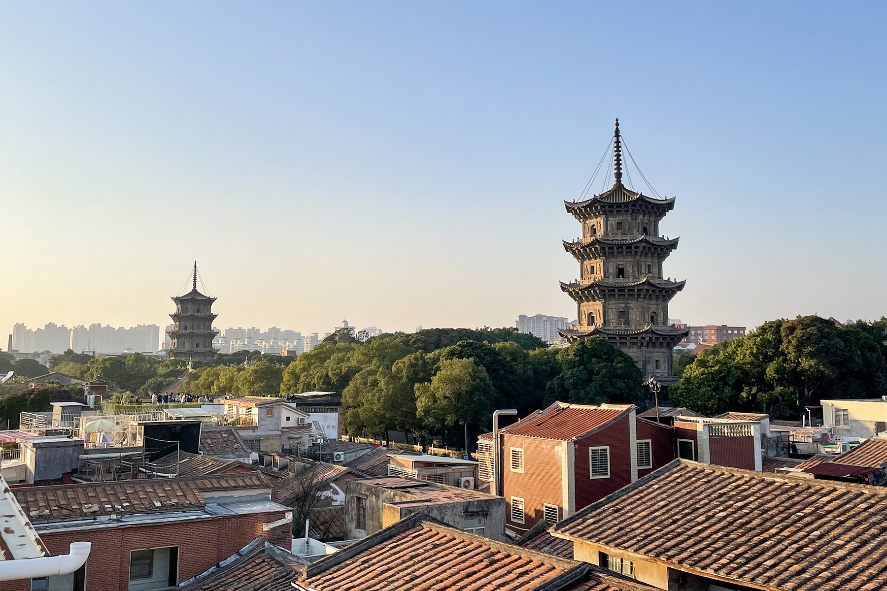
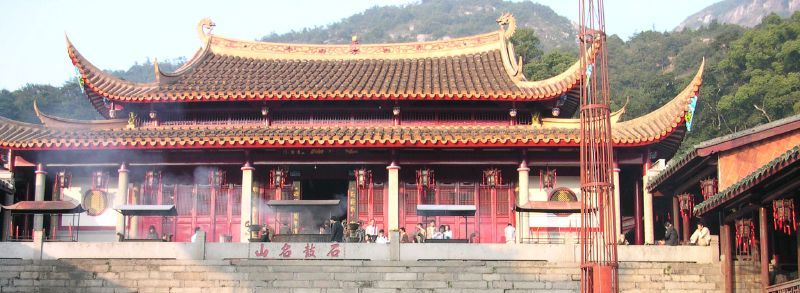
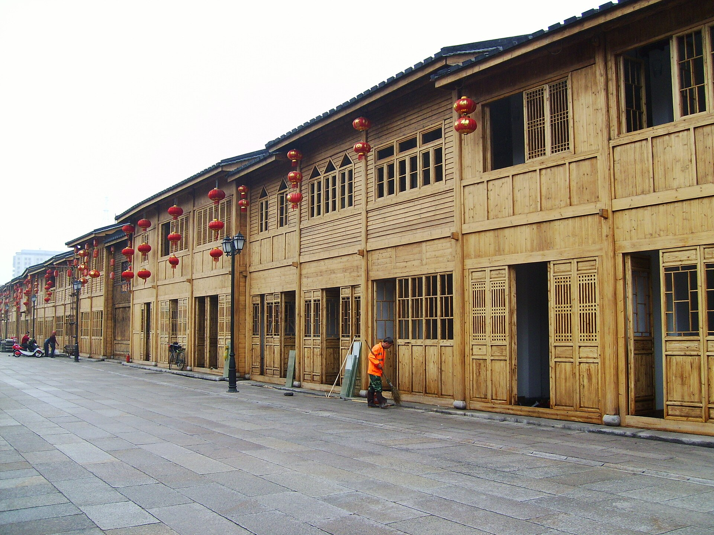
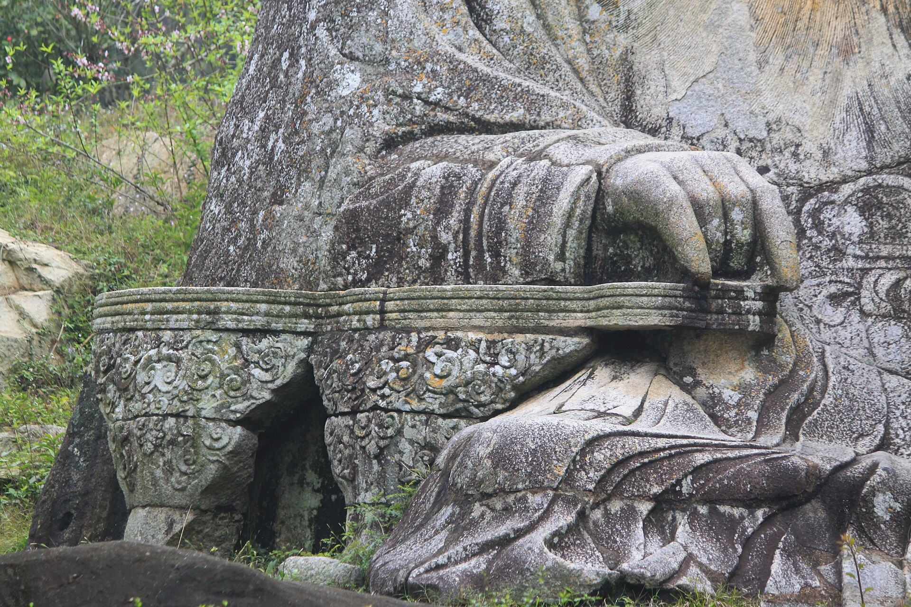
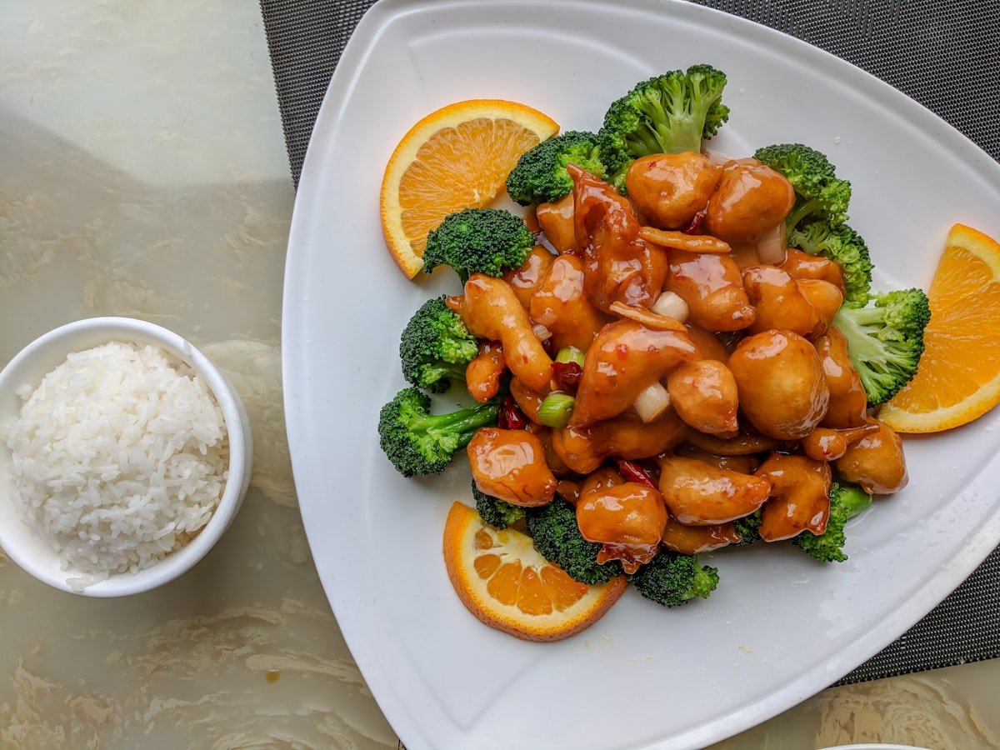

美食
福州佛跳墙、鱼丸、肉燕、锅边糊；泉州面线糊、姜母鸭、土笋冻、四果汤。口味清鲜偏甜，两人分食正好。

双城 · 5 天 4 晚
淄博出发 · 两人 · 10.2—10.6 · 天气最好 · 人流相对温和 · 世遗慢逛
亮点速览

福州佛跳墙、鱼丸、肉燕、锅边糊；泉州面线糊、姜母鸭、土笋冻、四果汤。口味清鲜偏甜，两人分食正好。

鼓山俯瞰闽江、清源山山城海一览、洛阳桥滩涂落日。10 月初不冷不热正适合爬山。

三坊七巷活着的明清里坊；泉州世遗之城——开元寺双塔、清净寺、老君岩都在市区。
大交通
济南遥墙→福州直飞约 2 小时，十一单程大致 ¥800–1500/人。门到门约 6–7 小时，适合抢到特价或不想久坐。
行程速览
| 日期 | 上午 | 下午 | 晚上 |
|---|---|---|---|
| D1 10.2 | 淄博→济南西→福州 | 高铁上 | 三坊七巷+达明路 |
| D2 10.3 | 鼓山 | 烟台山+上下杭 | 闽江夜色 |
| D3 10.4 | 动车赴泉州、开元寺 | 西街、钟楼、涂门街 | 古城扫街 |
| D4 10.5 | 清源山（老君岩） | 蟳埔村簪花 | 古城逛吃 |
| D5 10.6 | 退房返福州 | 福州→济南西→淄博 | 晚抵淄博 |
每日详细安排
建议赶早经济南西接直达车，约 17:30 抵福州站。住三坊七巷/东街口。晚上南后街看夜景（街区免费，宅院联票 ¥70 按需），达明路宵夜：永和鱼丸、同利肉燕、锅边糊。

西街补伴手礼（绿豆饼、源和堂蜜饯、永春老醋）。动车泉州→福州，接福州→济南西直达 G 车，济南西→淄博，晚 8 点前到家。
住宿
美食清单

福州：佛跳墙、鱼丸、肉燕、锅边糊、荔枝肉、芋泥。盯达明路、老药洲街。
泉州：面线糊、姜母鸭、土笋冻、四果汤、润饼、牛肉羹+咸饭。盯西街—钟楼—涂门街一线。认准「本地人多、只做一两样」的老店。
十一特别提示
清源山提前 1 天实名预约购票（¥70）；福建博物院周一闭馆（D4 恰逢周一别排）；开元寺十一可能限流，出发前看公众号。
弹性备选